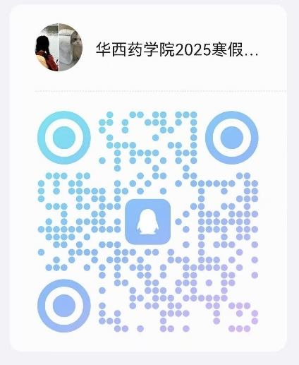

学院通知 · 校园活动
关于华西药学院2025年寒假科普志愿活动的通知
发布时间：2024-12-24
为深入贯彻习近平新时代中国特色社会主义思想，贯彻落实习近平总书记关于青年工作的重要思想和关于教育的重要论述，充分发挥实践育人功能，引导和帮助广大青年学生上好与现实相结合的 “ 大思政课 ” ，在社会课堂中 “ 受教育、长才干、作贡献 ” ，树牢家国情怀、投身基层实践，在中国式现代化建设中挺膺担当，学院将组织开展 2025 年寒假科普志愿活动申报工作。现将相关事宜通知如下。 一、活动内容 （一）讲好药学故事，宣传进中学 鼓励广大药学学子回到高中母校，开展药学专业宣传进中学。加强和母校老师、师弟师妹的密切交流与联系，积极做好华西药学专业科普宣传工作，拓宽学院招生宣传渠道。 学院为志愿者提供学院招生宣传 PPT 、宣传片等参考资料，鼓励同学发挥创意，针对中学生喜好，制作药学专业宣传海报、 PPT 、短视频等宣讲作品。 （二）科普下基层，助力健康战略 鼓励广大药学学子充分运用专业知识、专业优势深入社区、乡镇，调研基层居民健康用药现状，并积极开展医药学健康科普宣讲工作。通过引导药学生亲身投入到基层健康事业发展调研实践中，增强青年学子的新时代责任感与使命感。 二、活动形式 学生个人或组队参与实践活动，在家乡所在地、假期常住地就近就便开展。鼓励创新实践载体，因地制宜采取“云实践”，利用新媒体平台创新推出“专业宣传空中课堂”“科普云课堂”等丰富实践方式。 三、科普活动总结及表彰 1. 活动总结及表彰：分队及个人需提交社会实践活动总结表（附件 3- 四川大学华西药学院 2025 年寒假科普志愿活动总结表），提供自行创作的专业宣传资料、科普宣传资料、社会实践报告、调研问卷数据等。学院根据活动开展情况、宣传效果评选优秀个人（分队）、优秀作品。 2. 志愿时长认证：凡报名“讲好药学故事，宣传进中学”或“科普下基层，助力健康战略”任一活动，并提交调研问卷及原始数据（学院统一提供问卷）、相应科普作品等支撑材料（包括科普宣传 PPT 、科普视频、海报宣传册），可参与认定（ 6 小时 / 天）志愿时长。 3. 可申请创新学分：“讲好药学故事，宣传进中学”和“科普下基层，助力健康战略”社会实践科普志愿活动将在每个假期开展。参加两次活动，可取得《“讲好药学故事，宣传进中学”社会实践活动证书》或《“科普下基层，助力健康战略”社会实践活动证书》用于申请创新学分（按照创新学分申请办法办理）。 四、报名及材料提交 两个活动主题择一申报，不可兼报。 报名提交材料，附件 1 《四川大学华西药学院 2025 年寒假科普志愿活动报名表》及本人签字的附件 2 《四川大学华西药学院寒假科普志愿活动要求及承诺书》，于 2025 年 1 月 17 日中午 12 ： 00 前，将电子版报名表和承诺书（已签字的照片）发送到邮箱： 3315461849@qq.com 请同学们加入华西药学院 2025 年寒假科普志愿活动答疑交流群： 1011724984 ，并备注年级 + 姓名。 四川大学华西药学院 2024 年 12 月 20 日
